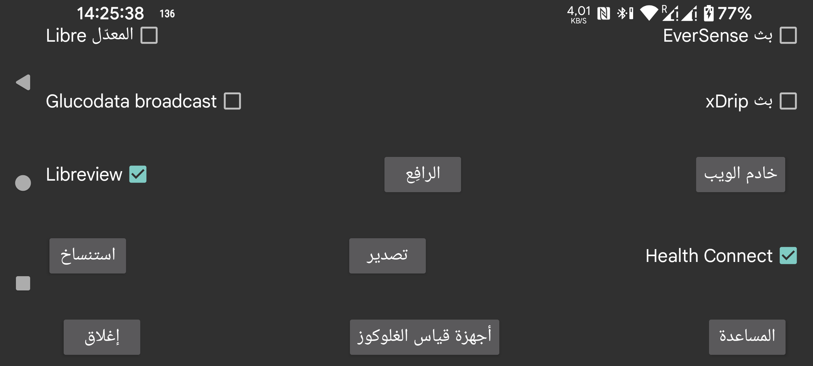

أرسل قيم الغلوكوز الدقيقة كل دقيقة إلى Health Connect. ويمكنك منح التطبيقات الأخرى حق الوصول إلى قيم الغلوكوز هذه، مثل Google Fit. ويمكن لتطبيقات أخرى بعد ذلك الوصول إلى البيانات الموجودة في Google Fit.
اتصل بـ Libreview لإرسال قيم الغلوكوز والكميات الخاصة بـ Freestyle Libre 2 و3 إلى Libreview، وكذلك للحصول على معرّف الحساب المستخدم أثناء تفعيل مستشعر Freestyle Libre 3. المس هذا الخيار لتغيير الإعدادات.
لا توجد مشكلة في بث Libre المعدّل نفسه، لكن xDrip يغيّر القيم عندما يستقبلها من هذا البث. ولأن المستخدمين يستعملون هذا البث بهذه الطريقة فقط، فقد كنت أنوي إزالة هذا البث.
لا يغيّر xDrip القيم عندما يستقبل قيم الغلوكوز من بث EverSense أو عندما يُستخدم خادم الويب في Juggluco كمصدر بيانات Nightscout.
بث آخر للغلوكوز. ويمكن استخدامه لإرسال قيمة غلوكوز كل دقيقة إلى xDrip. وفي xDrip يجب تعيين “640G/EverSense” كمصدر بيانات العتاد Hardware Data Source.
سيتجاهل xDrip معظم هذه القيم بسبب إصراره على قيمة واحدة كل 5 دقائق. ويمكنك إزالة هذا القيد بتعديل الشيفرة المصدرية لـ xDrip. غيّر 4 * 60 * 1000 إلى 55 * 1000 في app/src/main/java/com/eveningoutpost/dexdrip/models/BgReading.java بحيث تصبح:
public static BgReading readingNearTimeStamp(long startTime)
{
long margin = (55 * 1000);
return readingNearTimeStamp(startTime, margin);
}
الميزة مقارنة ببث Libre المعدّل هي أن xDrip لا يعالج قيم الغلوكوز بطريقة غير محددة.
يرسل البث نفسه الذي يمكن تشغيله في xDrip عبر "Settings->Inter-app settings->Broadcast locally". تستمع إليه تطبيقات مثل AndroidAPS. وعلى خلاف بث xDrip الأصلي الذي كان يُرسل كل 5 دقائق، فإن Juggluco يرسل هذا البث كل دقيقة.
بث جديد له الوظيفة نفسها التي يؤديها بث xDrip. ويمكنك العثور هنا على تطبيق مثال بسيط يكتب قيم الغلوكوز المستقبلة في logcat: Glucose broadcasts. وإذا اخترت Juggluco كمصدر بيانات في G-Watch، فيجب تشغيل هذا البث.
ستُعرض التطبيقات التي تستمع إلى هذا البث. حدّد التطبيقات التي تريد إرسال هذا البث إليها.
خادم ويب يمكن استخدامه مع ساعات xDrip وبعض تطبيقات Nightscout. وكان يُسمى سابقًا xDrip webserver.
يرفع البيانات إلى خادم Nightscout.
يرسل جميع البيانات عبر اتصال بالإنترنت إلى نسخة أخرى من Juggluco، وبذلك ينشئ نسخة مطابقة من Juggluco على جهاز آخر. وسيُستبدل ما كان موجودًا من بيانات.
يحفظ البيانات في ملف.